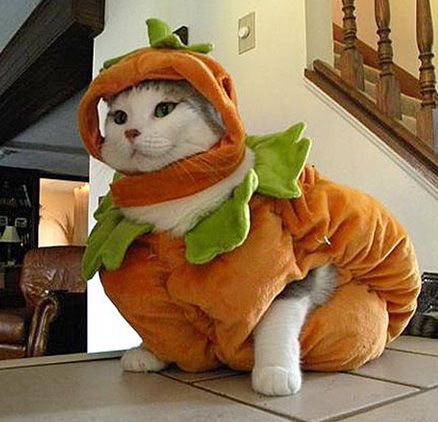
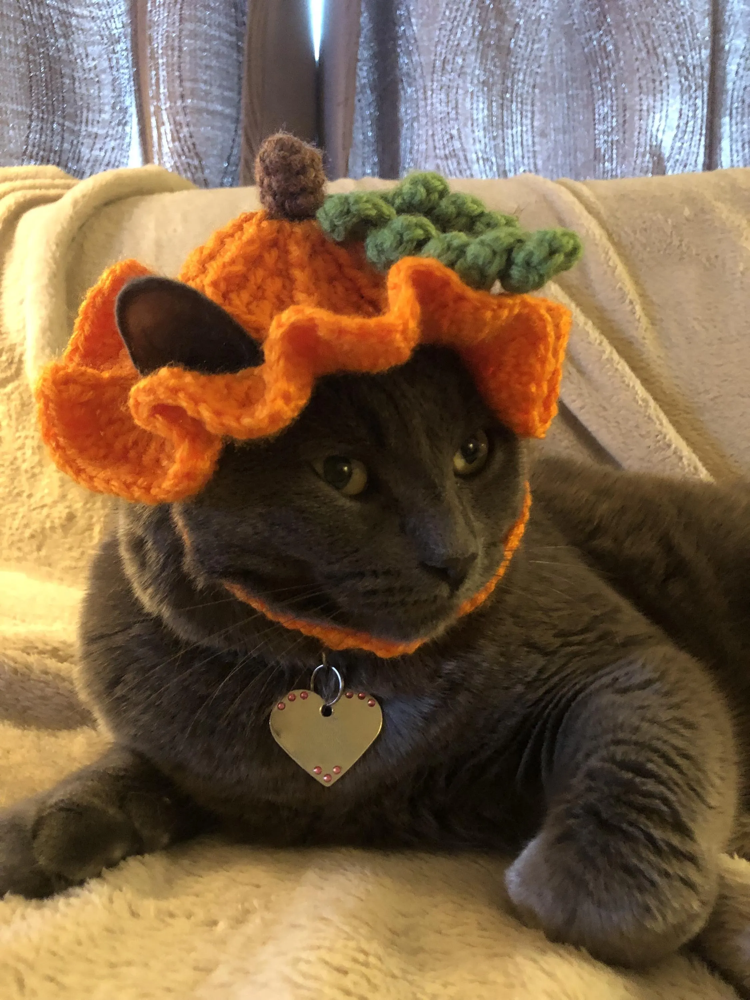
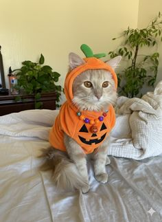
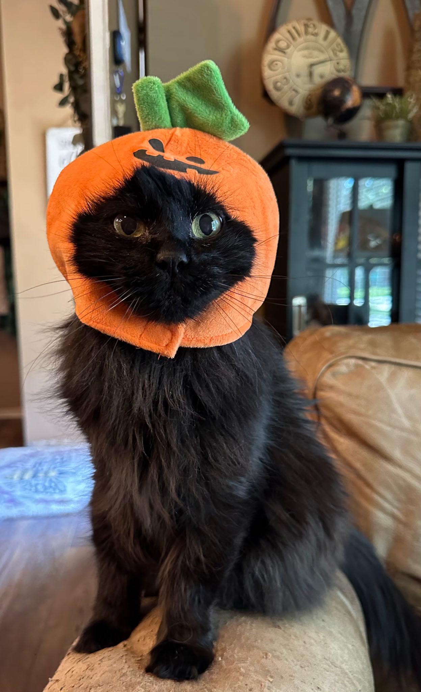

As for our third type of Halloween felines, here's some Pumpkin Cats! These are my personal favorite.
← Back to HomePumpkin Cat #1 - Very Large Pumpkin

Pumpkin Cat #2 - Crocheted Hat

Pumpkin Cat #3 - Jack o'Lantern Hood

Pumpkin Cat #4 - Basic Jack o'Lantern Hat
